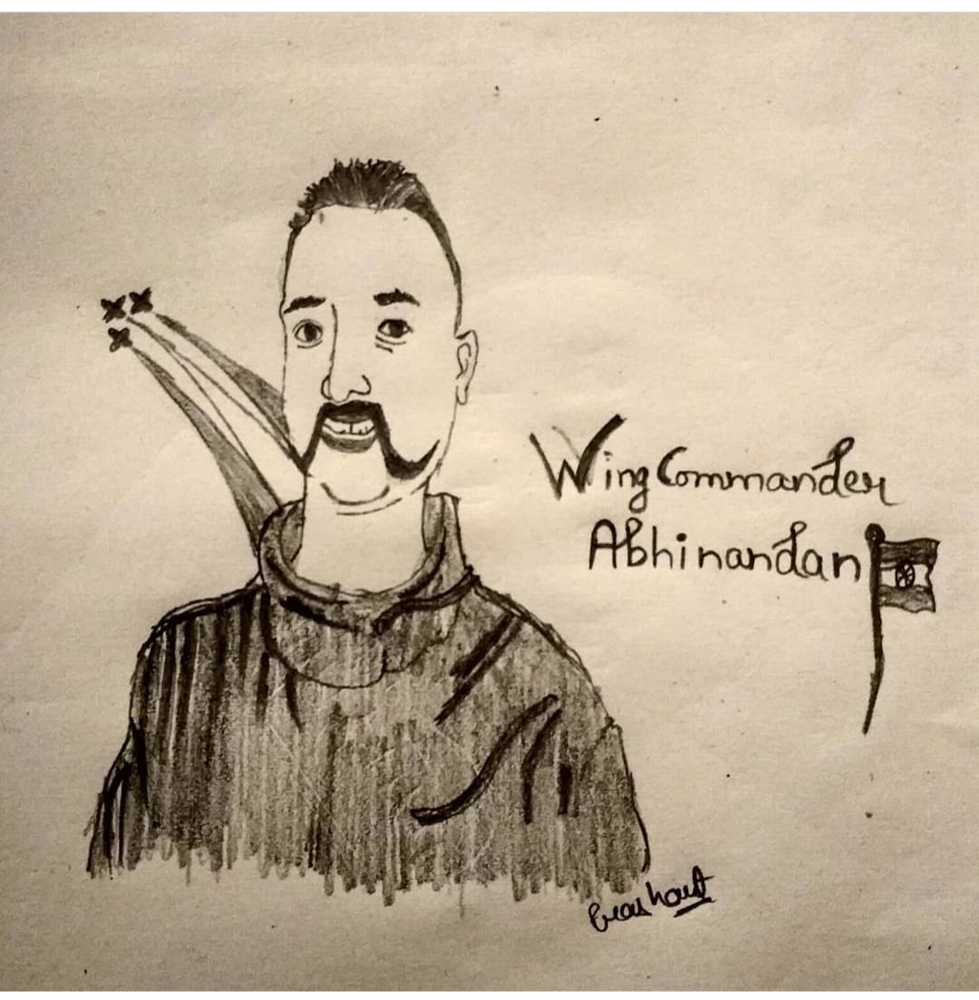

Here are some my favourite sketch, which are made some on demand of my friends and some are closer to me which I can't tell you here but I can express by making them. Hope you like it and appreciate it.
"Your commment will boost my sketch skills"
Love✌️